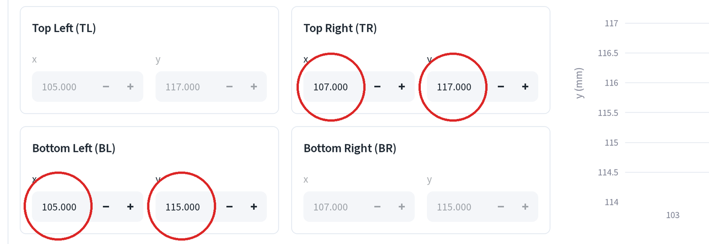
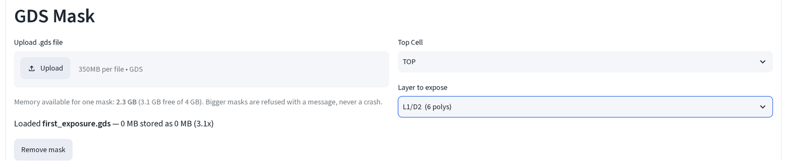
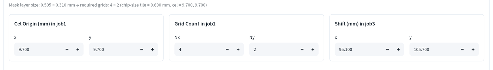
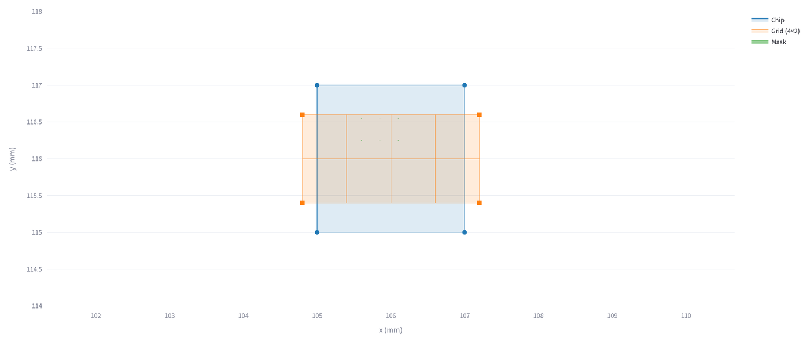
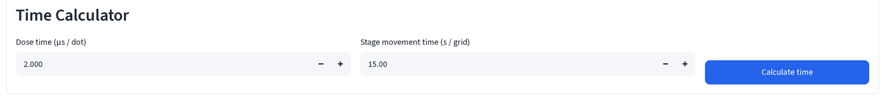
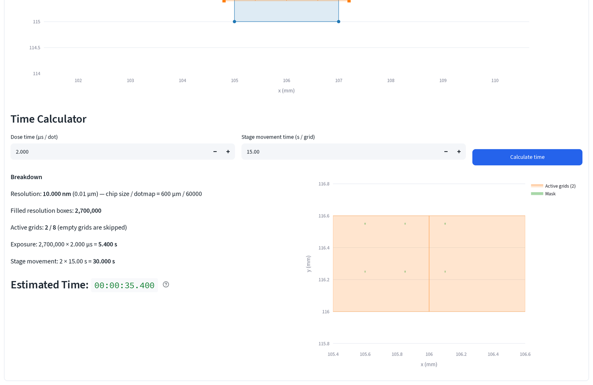

First exposure¶
Write the first pattern onto a bare chip: no marks, no registration to
anything already there, the write field is just tiled with chip-size grids
and centered on the chip. This page walks the First Exposure mode with
first_exposure.gds (six devices, base pads / emitter fingers / collector
pads each on their own datatype, plus four alignment marks reserved for the
second exposure that follows this one).
Read EBL calculator basics first if this is your first time on this page. Every field below keeps its default value except the two positions you're told to type, everything else is either auto-computed from the mask or left alone on purpose; each screenshot says which.
1. Set the chip corners you actually found¶
Before touching the mask, Chip Position in the E-beam Holder needs to match where the chip really sits in the holder today, not the boilerplate default. Say, for example, you found the chip's bottom-left corner at stage position (105.000, 115.000) mm under the beam:
- Type that into the Bottom Left (BL) x/y fields.
Then you locate the top-right alignment mark, near the chip's top-right corner, at design coordinates (1900, 1900) µm on this mask, and read its stage position as (107.000, 117.000) mm:
- Type that into the Top Right (TR) x/y fields.

Top Left (TL) and Bottom Right (BR) are grayed out and computed for you, with Shape = Rectangular and Editable diagonal = BL / TR (both defaults), the other diagonal is derived automatically. Don't touch them.
2. Load the mask and pick a layer¶
- Upload
first_exposure.gds, then set Layer to expose toL1/D2(6 polys), the emitter fingers, the finest-pitch feature on this mask and the one dose matters most for.

This mask keeps base pads, emitter fingers and collector pads on separate
datatypes (L1/D1, L1/D2, L1/D3). Each gets exposed as its own pass. This walkthrough covers one; repeat for the others with the same corners and
Cel Origin.
3. Leave the grid geometry on auto¶
- Pick First Exposure under Workflow. Cel Origin (mm) in job1, Grid Count in job1 (Nx, Ny) and Shift (mm) in job3 are all computed for you from the mask's bounding box and the chip corners you set in step 1, leave all three alone.

The caption above the cards spells out the arithmetic: this mask layer is 0.505 × 0.310 mm, which needs a 4×2 grid of 0.600 mm tiles at the default Cel Origin (9.700, 9.700) to fully cover it. Change the layer, the chip corners, or the chip size in Left Computer Setup, and these three cards recompute, that's why they're left on auto instead of typed by hand.
4. Check the plot¶

The chip rectangle now reflects the corners from step 1, the grid is centered on it, and the emitter mask (barely visible at this scale, six 4, 5 µm-wide slivers) lands across two of the eight tiles.
5. Set the dose and read the time¶
- Under Time Calculator, leave Dose time (μs / dot) and Stage movement time (s / grid) at their defaults (2.000, 15.00) and click Calculate time.


Only 2 of the 8 tiles hold any emitter geometry (Active grids: 2 / 8); the rest are skipped, so exposure and stage-movement time only count the tiles that actually have pattern in them. Estimated Time is what goes on the job sheet, see the job number sheet for where every number from this page and dose test lands in the JEOL system, in order.